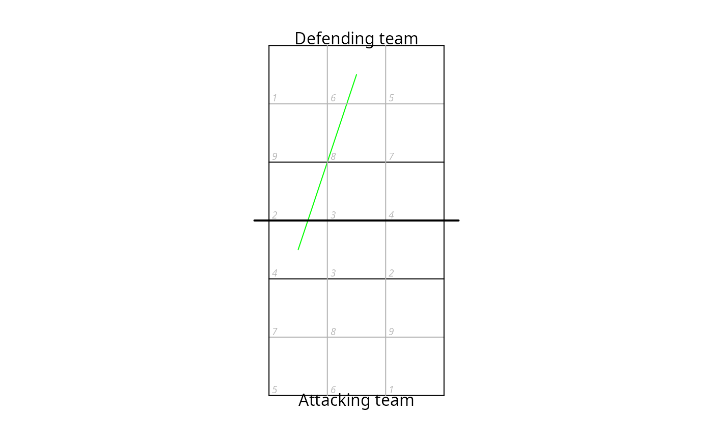

dv_plot_new.RdThe plot will be set up as either a full- or half-court plot, depending on the inputs. The extent can be specified via the court argument (values either "full", "lower", or "upper"), or via the x and y arguments. If the latter, provide either separate x and y numeric vectors, or as a single x RasterLayer object. If no extent is specified by any of these methods, a full-court plot is assumed.
dv_plot_new(x, y, legend, court, margins, par_args, ...)
| x | numeric or RasterLayer: x-coordinates of the data to plot, or a |
|---|---|
| y | numeric: y-coordinates of the data to plot. Not needed if |
| legend | logical: if |
| court | string: either "full", "lower", or "upper" |
| margins | numeric: vector of four values to use as margins (bottom, left, top, right). Values are as a proportion of the plot size |
| par_args | list: parameters to pass to |
| ... | : additional parameters passed to |
dv_plot_new()## show an attack from position 4 to position 6 from <- dv_xy(4, end = "lower") to <- dv_xy(6, end = "upper") lines(c(from[1], to[1]), c(from[2], to[2]), col = "green")